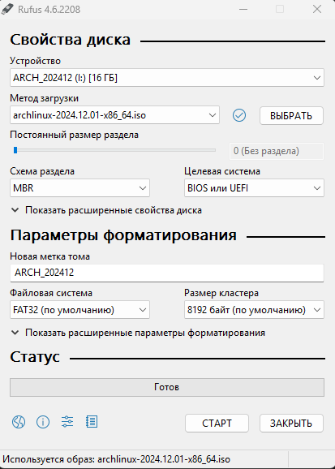
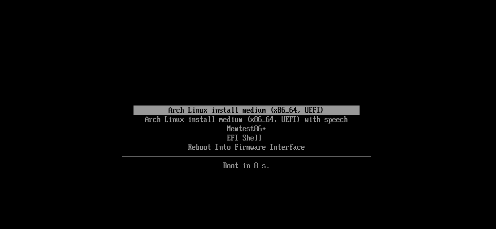

Arch Linux#
Preparation of Installation Image#
Note
We want to emphasize that Linux systems can be installed almost anywhere: on a desktop, a laptop, a USB drive, or even a phone (if the distribution supports it). The installation process is roughly the same, but there are differences that need to be understood. For example, when installing Arch Linux as a second system, you'll need to manually configure efibootmgr. Additionally, there are differences in setting up dual boot on a machine with BIOS versus UEFI.
That's why guides will repeat certain steps to avoid creating confusion with too many "If you have BIOS, do this…" and "If you have UEFI, do that…" instructions scattered throughout.
What You’ll Need to Begin Installation:
- A USB flash drive
- The system’s ISO file
- A program to write the ISO image
- A machine where Arch will be installed
The installation will be done as the primary operating system.
Let's create the installer on a USB drive.
First, download the system image from the official Arch Linux website using the method that works best for you. We recommend using a Torrent client.
There are several programs that can help with this process, such as:
- Rufus
- Balena Etcher
- UltraISO (Yes, really…)
In our case, we'll use Rufus. After downloading the image, open Rufus.
- Device: Select your *USB flash drive.
- Boot selection: Choose "Disk or ISO image" and specify the path to the Arch Linux ISO file.
- Partition scheme: Select MBR.
- File system: Choose FAT32.
- Cluster size: Leave it as default.

Important
All files on the USB drive will be erased!
- Click Start. In the pop-up window, select the option that mentions the ISO.
After the process is complete, connect the USB flash drive to the machine where you want to install the system.
Enter the BIOS of the machine and disable Secure Boot (you can enable it again after the installation is complete).
Now, we can boot from the USB. When the machine boots from the USB, you'll see a menu. Select the first option Arch Linux install medium, and wait for the system to load.

Installation#
Network settings#
Setting Up a Wireless Network
If you are connected via a wired connection, simply check if it works using the following command:
If you get a response, everything is fine. If not, it means the required service didn't start. Try restarting the machine or re-creating the installation image. We will use the iwctl utility.
Execute the command:
Then enter the following commands:
- List available wireless devices:
Identify the name of your wireless device (e.g., wlan0).
- Scan for available networks:
- View the list of available networks:
- Connect to a Wi-Fi network:
After this command, you will need to enter the password if the network is secured.
- Check the connection status:
Ensure the network is connected.
Disk Partitioning#
There are two utilities for disk partitioning:
- fdisk
- cfdisk
We gonna use fdisk, which is simpler to use and more user-friendly for inexperienced users.
First, let's determine the name of our disk.
Important
It is recommended to disconnect any unnecessary disks to avoid confusion and the accidental loss of data due to inexperience.
Use the following command to determine the name of your disk:
This will output a list of connected disks.
Run the following command to configure your disk:
We need to create three partitions:
| Partition | Size | Type |
|---|---|---|
| boot | 1G | Efi-system |
| swap | 8G | linux swap |
| root | Remaining space | linux filesystem |
Press P to list partitions in selected disk, if any exists.
Press N to create a new partition. Partition numbers should be left as default. Leave the First sector as default by pressing Enter and allocate +1G for Last sector. We just created boot partition.
Do same steps for swap by allocating 4-8G (if you want) and all remaining space for root.
Important
SWAP is the swap partition; it is recommended to include it if your machine has less than 8 GB of RAM.
After creating all partitions, press W to apply the changes.
Archinstall#
Okay, we’re done with partitioning the disk. Now, let’s proceed with installing Arch with all the components.
Enter and wait:
We will be greeted with the following menu.
Let's go step by step through the process of installing Arch Linux using the installer:
Locale
Here, you can add the language to be used in the system.
- Select Locale language and search for the desired language. You may choose
ru_RUif you need so.
Note
To quickly search, you can press ? and type the language you need, such as en or ru.
Disk configuration
- Select
Manual Partitioning.
- Choose your disk, in our case
nvme0n1.
- Select 1G partition. Assing mountpoint:
/boot. Select mark/unmark to be formatted. Change filesystem tofat32.
- Select partition with all remaining disk space. Assing mountpoint:
/. Select mark/unmark to be formatted. Change filesystem toext4.
- Press
Confirm and exit.
Bootloader
- Select
GRUB
Hostname
Name is used as the computer’s network name.
- Enter the name for your system (you can leave it as archlinux).
Root password
Set a password for the root user.
- Enter the password and confirm it.
User account
Add a new user account.
- Enter a username.
- Enter a password for the user.
You will be prompted to confirm the addition of superuser privileges (sudo).
- Select
Yesto confirm.
Profile
Choose a GUI for your Arch installation.
- Press
Type.
- Select
Desktop.
- Choose
KDE plasma.
- Choose
sddm
Choose a desktop environment that suits you. It is recommended to choose KDE Plasma.
You will be redirected to the next menu.
You may choose the appropriate Graphics driver based on your system configuration, but leave as default (All).
Network configuration
- Choose
Use NetworkManager
Additional packages
Add additional programs that you might find useful.
For now, let’s add:
nano firefox btop
Timezone
Choose your time zone.
Note
For quick search, press ? and type your desired time zone.
Audio
Select pipewire.
Installing Arch
After the pre-installation setup, select Install.
Then select Yes and wait for the installation to complete.
Once the installation is complete. After the installation is complete, we are prompted to continue the setup in chroot. Select Yes.
GRUB configuration#
Now, let's set up grub.
As we can see there is not arch in boot manager by running the command:
Modify the configuration:
If successful, Installation finished. No errors reported will appear.
Re-check as arch entry had to appear:
Finally:
Dual-boot#
If you need to add Windows boot entry for dual-boot, firstly enter root user:
Install OS-prober:
Edit grub config:
Scroll to the bottom and uncomment the following
Press Ctrl+X, Y and Enter.
Now you need to check the Windows Boot manager entry:
Generate grub configuration file:
Should be good to good, if debug messages say so.
The REAL final reboot:
Linux goodies#
| Application | Description |
|---|---|
| Blue Screen of Life | Menu styled like the Windows Blue Screen of Death, but family-friendly |
| Arch Linux Gangster Edition Plymouth theme | Windows XP boot screen styled as gangsta. You a real gangsta, bro? |
| macOS Boot Splash Style | Apple minimalism at its finest. Trendy and stylish |
| Plymouth Themes | A pack of multiple boot animations |